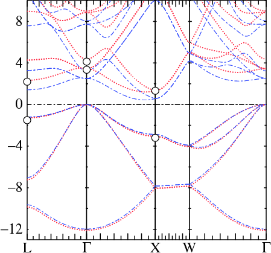

To get started, copy doc/demos/qsgw-si/init.si to your working directory. Inspect the init file and you will see it contains just the minimum structural information. Then use the blm tool
blm --gw --nk=4 --nkgw=3 --gmax=5 init.siGenerating input files using blm is described in detail in this tutorial.
blm should generate file actrl.si, which should be essentially the same as doc/demos/qsgw-si/ctrl.si. (If this is not the case, something is wrong with your configuration. You should not continue if your template does not agree with the one supplied.)
The command-line arguments are not essential, but they are there to supply quantities blm cannot determine automatically. You can supply them on the command-line; or at some later point you can supply them by editing input files.
One consequence of --gw is that blm autogenerates a GW category. Its tokens mostly hold parameters that go into the GW input file (GWinput), which will be used in the QSGW step when it is generated later.
--gw also affects the HAM_AUTOBAS tag;
HAM AUTOBAS[PNU=1 LOC=1 LMTO=5 MTO=4 GW=1]Turning HAM_AUTOBAS_GW on affects several things, for example, the manner in which lmfa autogenerates basis set parameters. It sets envelope function energy EH somewhat more negative than what is typical for the LDA. This is not important for one-shot GW calculations, but does matter for QSGW, because lmf must be able to interpolate the QSGW self-energy between k points. Interpolation of the self-energy is a difficult thing to do computationally; it is necessary that EH be sufficiently negative so that the envelope functions are sufficiently short-ranged.
If BZ_NKABC is not given a legitimate mesh (one, two or three positive integers) lmf will exit with this message:
Exit -1 bzmesh: illegal or missing k-mesh
The k mesh data that the GW codes actually reads comes from the following tag in the GWinput file:
n1n2n3 #1 #2 #3 ! for GW BZ mesh
lmfgwd will set up a template GWinput file for you.
You can already at this stage supply data for the n1n2n3 tag,
through the command-line argument --nkgw=.... This affects the GW category in the ctrl template it creates.
Later, when lmfgwd generates a GWinput template, it uses data in GW
to populate various tags (n1n2n3 among others) in GWinput.
Thus data given by --nkgw=... eventually makes its way to GWinput through
blm → lmfgwd → GWinput.
Alternatively, you can edit either the ctrl or the GWinput file later.
For a fuller description of the ctrl file, see the FP tutorial, and also the Building_FP_input_file.html.
cp doc/demos/qsgw-si/{init,syml}.si . ← This page describes the init file; see here for the syml file
rm -f mixm.si rst.si sigm ← in case they are already present: this demo starts from scratch
blm --gw --nk=4 --nkgw=3 --gmax=5 init.si ← as described above
cp actrl.si ctrl.si ← Copy template to input file
lmfa si ← Makes free atom density; also makes basp0 and suggests GMAX=5.0
cp basp0.si basp.si ← Copy lmfa-generated basis parameters to file lmf reads
lmf -vnit=20 si ← Self-consistent LDA calculation for Si.
lmf si --band:fn=syml ← LDA energy bands
cp bnds.si bnds-lda.si ← rename file for future use
The approximate self-consistent gap comes out to
0.58 eV as can be seen by inspecting the output of lmf.
(This is actually the Γ-X gap; the true gap is 0.44 eV as can be seen by running lmf with a fine k mesh.)
If you are only looking to carry out LDA calculations, this is the end of the tutorial.
*Note that the GW package does not make use of the .si extension in the same way as the LDA package. Nevertheless it is still used because lmf and the GW package communicate with each other.
lmfgwd can create a template GWinput for you. Do this with
echo -1 | lmfgwd si ← makes a GWinput fileBe advised that GWinput is a template only; you need to be careful about the parameters in it.
lmfgwd must choose default values for a number of critical parameters, some of which parameters cannot be automatically determined in a reliable way, e.g. the GW k-point mesh defined by the n1n2n3 tag cannot be determined at all. You can supply certain key parameters the GW category of the input file. blm autogenerated this category
% const gcutb=2.7 gcutx=2.2 nkgw=3
GW NKABC={nkgw} GCUTB={gcutb} GCUTX={gcutx} DELRE=.01 .1 MKSIG=3 GSMEAR=0.003 PBTOL=1e-3
The following tags appear in the newly created GWinput file:
n1n2n3 3 3 3 ! for GW BZ mesh QpGcut_psi 2.7 !|q+G| cutoff for eigenfunction QpGcut_cou 2.2 !|q+G| cutoff for coulomb int.NKABC, GCUTB, GCUTX in the GW category get translated into tags n1n2n3, QpGcut_psi, and QpGcut_cou, respectively. These tags, and indeed the entire GWinput file are explained in the GW practicum tutorial.
You are strongly advised to read the GW practicum , as well as the GW manual (even though it is a bit old) before attempting any calculations on your own.
rm -f switches-for-lm mixsigma ← Remove files that may affect the calculation
lmgwsc --wt --insul=4 --tol=2e-5 --maxit=2 -vnit=10 si ← the QSGW calculation.
Invoke lmgwsc without arguments to see available command-line options.

At this point you should have a file sigm residing in your working directory.
Because ctrl.si has HAM_RDSIG=12, it will
automatically read sigm.si and effectively add it as an external potential.
The actual file is sigm; lmgwsc makes a soft link
to sigm.si so lmf can read it.
Do a band pass substituting the QSGW exchange-correlation potential for the LDA one:
lmf si -vnit=1 --rs=1,0 ← Generate Fermi level for QSGW potential.
Confirm that density is nearly self-consistent.
Inspect the lmf output and you can find that the Γ-X gap is now 1.34 eV.
To make the QSGW energy bands, do:
lmf si --band:fn=syml cp bnds.si bnds-qsgw.siThe figure on the right compares bnds-qsgw.si and bnds-lda.si, along with a few experimentally determined values (circles). If you have the plbnds and fplot codes installed you can make this picture (sans experimental points) with the following:
echo -13,10,5,10 | plbnds -fplot -ef=0 -scl=13.6 -dat=red bnds-qsgw.si
echo -13,10,5,10 | plbnds -fplot -ef=0 -scl=13.6 -dat=blue bnds-lda.si
echo -13,10,5,10 | plbnds -fplot -ef=0 -scl=13.6 -lbl=L,G,X,W,G bnds-lda.si
\mv plot.plbnds plot.plbnds~
echo "% char0 colg=1,bold=4,clip=1,col=.3,1,.2" >>plot.plbnds
echo "% char0 colr=3,bold=4,clip=1,col=1,.2,.3" >>plot.plbnds
echo "% char0 colb=2,bold=2,clip=1,col=.2,.3,1" >>plot.plbnds
awk '{if ($1 == "-colsy") {sub("-qr","-lt {colg} -qr");sub("dat","green");sub("green","red");sub("colg","colr");print;sub("red","blue");sub("colr","colb");print} else {print}}' plot.plbnds~ >> plot.plbnds
fplot -f plot.plbnds
*Note that the basis set for this calculation isn't quite converged. For Si this is not much of an issue but it can matter a bit for other materials (making errors of order 0.1 eV). The atom-centered LMTO basis set is sufficient for LDA calculations, but it is not quite adequate for GW (work is in progress for a next-generation basis which should address this limitation). To make the basis complete you should add floating orbitals (you cannot add (you cannot add APWs in the QSGW context because the self-energy interpolator does not work with delocalized orbitals). Floating orbitals are like the empty spheres often required by the ASA, but they have no augmentation radius. You can automatically locate them using lmchk (the same way the empty sphere locator works for the ASA).
Inspecting GWinput, you can the mesh of 3×3×3 divisions yields four irreducible k points:
*** q-points (must belong to mesh of points in BZ). 3 1 0.0000000000000000 0.0000000000000000 0.0000000000000000 2 -0.3333333333333333 0.3333333333333333 0.3333333333333333 3 0.0000000000000000 0.0000000000000000 0.6666666666666666 4 -0.3333333333333333 0.3333333333333333 1.0000000000000000They do not include the X point L points, points in which we particularly interested. A 4×4×4 mesh does include these points. Do the following:
echo -1 | lmfgwd si -vnkgw=4Now 8 irreducible k points are made, including X (0,0,1) and L (-1/2,1/2,1/2).
*** q-points (must belong to mesh of points in BZ). 3 1 0.0000000000000000 0.0000000000000000 0.0000000000000000 2 -0.2500000000000000 0.2500000000000000 0.2500000000000000 3 -0.5000000000000000 0.5000000000000000 0.5000000000000000 4 0.0000000000000000 0.0000000000000000 0.5000000000000000 5 -0.2500000000000000 0.2500000000000000 0.7500000000000000 6 -0.5000000000000000 0.5000000000000000 1.0000000000000000 7 0.0000000000000000 0.0000000000000000 1.0000000000000000 8 0.0000000000000000 0.5000000000000000 1.0000000000000000You can calculate QP corrections for all of these points. But we will only calculate QP corrections at Γ, X, and L in this tutorial. The `3' just below the `q-points' line tells the GW codes how many points to calculate QP corrections for. We stick with 3, but rearrange the order so that these three points are the first three. Make the change with your text editor:
*** q-points (must belong to mesh of points in BZ). 3 1 0.0000000000000000 0.0000000000000000 0.0000000000000000 3 -0.5000000000000000 0.5000000000000000 0.5000000000000000 7 0.0000000000000000 0.0000000000000000 1.0000000000000000 2 -0.2500000000000000 0.2500000000000000 0.2500000000000000 4 0.0000000000000000 0.0000000000000000 0.5000000000000000 5 -0.2500000000000000 0.2500000000000000 0.7500000000000000 6 -0.5000000000000000 0.5000000000000000 1.0000000000000000 8 0.0000000000000000 0.5000000000000000 1.0000000000000000This was done in doc/demos/qsgw-si/GWinput-1shot.
Use script lmgw-1shot for the 1-shot calculation:
cp rst.lda rst.si sigm.si ← restore the LDA density rm -f sigm.si ← remove the QSGW self-energy rm -f switches-for-lm ← remove, in case this file is present cp doc/demos/qsgw-si/GWinput-1shot GWinput ← in case you didn't GWinput yourself lmgw1-shot --autoht --insul=4 -job= si-test si ← this is the GW calculationQP levels are kept in a relatively user-friendly format in the QPU file. QPD holds the corresponding information for the second spin (spin polarized calculations only).
↓ ↓ ↓ ↓ ↓ ↓
q state SEx SExcore SEc vxc dSE dSEnoZ eLDA eQP eQPnoZ eHF Z FWHM=2Z*Simg ReS(elda)
0.00000 0.00000 0.00000 1 -17.47 -1.81 6.74 -12.47 -0.04 -0.07 -11.98 -12.02 -12.05 -19.08 0.65 1.25632 -12.53859
0.00000 0.00000 0.00000 2 -12.99 -1.96 1.34 -13.62 0.00 0.00 0.00 0.00 0.00 -1.63 0.78 0.00000 -13.61491
0.00000 0.00000 0.00000 3 -12.99 -1.96 1.34 -13.62 0.00 0.00 0.00 0.00 0.00 -1.63 0.78 0.00000 -13.61492
0.00000 0.00000 0.00000 4 -12.99 -1.96 1.34 -13.62 0.00 0.00 0.00 0.00 0.00 -1.63 0.78 0.00000 -13.61493
0.00000 0.00000 0.00000 5 -5.56 -1.42 -4.06 -11.82 0.60 0.77 2.51 3.10 3.28 7.05 0.77 -0.00095 -11.04486
0.00000 0.00000 0.00000 6 -5.56 -1.42 -4.06 -11.82 0.60 0.77 2.51 3.10 3.28 7.05 0.77 -0.00095 -11.04487
0.00000 0.00000 0.00000 7 -5.56 -1.42 -4.06 -11.82 0.60 0.77 2.51 3.10 3.28 7.05 0.77 -0.00095 -11.04488
0.00000 0.00000 0.00000 8 -5.85 -3.72 -4.62 -15.20 0.77 1.02 3.23 4.00 4.25 8.58 0.76 -0.00268 -14.18039
-0.50000 0.50000 0.50000 1 -16.86 -2.08 5.71 -13.15 -0.06 -0.09 -9.64 -9.71 -9.73 -15.73 0.72 1.00519 -13.23522
-0.50000 0.50000 0.50000 2 -14.88 -1.66 4.32 -12.12 -0.07 -0.10 -7.02 -7.09 -7.12 -11.73 0.71 0.39630 -12.21877
-0.50000 0.50000 0.50000 3 -13.21 -1.92 1.74 -13.30 -0.07 -0.09 -1.21 -1.27 -1.29 -3.32 0.77 0.00000 -13.39092
-0.50000 0.50000 0.50000 4 -13.21 -1.92 1.74 -13.30 -0.07 -0.09 -1.21 -1.27 -1.29 -3.32 0.77 0.00000 -13.39093
-0.50000 0.50000 0.50000 5 -5.81 -2.15 -3.91 -12.66 0.61 0.78 1.42 2.03 2.21 5.83 0.78 0.00000 -11.87333
-0.50000 0.50000 0.50000 6 -4.90 -0.99 -4.31 -10.98 0.60 0.78 3.28 3.88 4.06 8.08 0.77 -0.00675 -10.19728
-0.50000 0.50000 0.50000 7 -4.90 -0.99 -4.31 -10.98 0.60 0.78 3.28 3.88 4.06 8.08 0.77 -0.00675 -10.19729
-0.50000 0.50000 0.50000 8 -2.38 -0.59 -5.38 -8.87 0.41 0.52 7.58 7.98 8.10 13.19 0.78 -0.32632 -8.34118
0.00000 0.00000 1.00000 1 -16.00 -2.11 4.86 -13.20 -0.04 -0.06 -7.84 -7.88 -7.90 -13.04 0.70 0.55179 -13.25992
0.00000 0.00000 1.00000 2 -16.00 -2.11 4.86 -13.20 -0.04 -0.06 -7.84 -7.88 -7.90 -13.04 0.70 0.55179 -13.25984
0.00000 0.00000 1.00000 3 -13.42 -1.69 2.34 -12.59 -0.13 -0.18 -2.87 -3.01 -3.05 -5.68 0.74 0.00411 -12.76621
0.00000 0.00000 1.00000 4 -13.42 -1.69 2.34 -12.59 -0.13 -0.18 -2.87 -3.01 -3.05 -5.68 0.74 0.00411 -12.76621
0.00000 0.00000 1.00000 5 -5.04 -0.92 -3.68 -10.25 0.49 0.62 0.58 1.07 1.19 4.58 0.79 0.00000 -9.63521
0.00000 0.00000 1.00000 6 -5.04 -0.92 -3.68 -10.25 0.49 0.62 0.58 1.07 1.19 4.58 0.79 0.00000 -9.63529
0.00000 0.00000 1.00000 7 -3.67 -2.35 -6.67 -13.50 0.59 0.81 10.02 10.61 10.82 17.20 0.73 -0.65031 -12.69310
0.00000 0.00000 1.00000 8 -3.67 -2.35 -6.67 -13.50 0.59 0.81 10.02 10.61 10.82 17.20 0.73 -0.65031 -12.69310
The exchange and correlation terms are in the columns depicted by red arrows
(↓), with the exchange divided into core+valence parts.
The total shift relative to the LDA (`vxc') is given; the GW-LDA difference is added to the LDA
to obtain QP levels (↓). There are two numbers, eQP and eQPnoZ.
The `proper' number has the shift scaled by the Z factor (eQP) but we have shown
that
eQPnoZ is a somewhat better choice.
This is because leaving out the Z factor accounts, in an approximate way, for self-consistency in G.
Shifts are typical for a 1-shot GW calculation in a semiconductor. The Γ-X bandgap (1.07 eV) is an improvement over the LDA, but it is nevertheless smaller than experiment (1.32 at 0K). This tendency is a universal feature of semiconductors. It was not recognized for a long time because pseudopotential calculations (nearly all calculations were pseudopotential based until about 2005) tend to put levels too high, and somewhat remarkably, yielded fortutitously good agreement with experiment in many cases.
*Note that the Hartree-Fock gap (↓) is much too large. This is approximately the correct "exact exchange" gap if the potential discontinuity is taken into account; see Grüning, Marini, Rubio, J. Chem. Phys. 124, 154108 (2006).